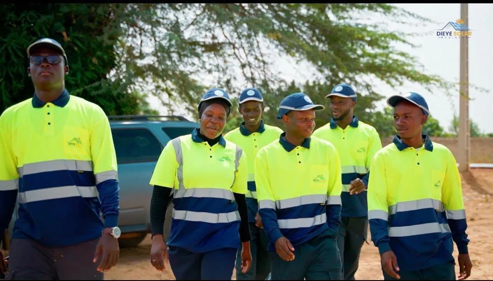

FAQ
Questions fréquentes sur le solaire, le pompage et la formation au Sénégal
Les 15 questions qui reviennent le plus souvent avant un chantier. Un sujet manque ? Écrivez-nous — nous mettons cette page à jour.
Ces réponses s'appuient sur nos chantiers réels au Sénégal depuis 2018 — villas, mosquées, usines agro-alimentaires, exploitations agricoles. Pour une étude personnalisée, écrivez-nous sur WhatsApp ou passez par la page contact.
Prix et budget
Combien coûte une installation solaire moyenne au Sénégal ?
Une villa standard de 11 kWc avec stockage lithium coûte entre 9 et 13 millions de FCFA, pose comprise. Un petit kit résidentiel de 3 kWc démarre à 1,8 million de FCFA. Une centrale industrielle à injection directe de 1 MWc, type Sandiara, se situe entre 550 et 750 millions de FCFA. Chaque prix dépend des panneaux (Canadian Solar, JA Solar, Longi), des batteries (Dyness, BYD, Pylontech), des onduleurs (Deye, Huawei, Sungrow) et des contraintes du site. Le détail est dans notre guide des prix 2026.
Combien peut-on économiser sur sa facture Senelec ?
Avec un tarif Senelec autour de 125 FCFA/kWh et une production de 4,8 kWh par kWc et par jour à Thiès, une villa de 11 kWc économise environ 198 000 FCFA par mois. Une mosquée de 28 kWc comme celle d'Abdoulaye Diop (Thiès), que nous avons équipée en 2025, économise 600 000 FCFA par mois. Le retour sur investissement se situe entre 3 et 5 ans pour une installation hybride bien dimensionnée.
Peut-on payer en plusieurs fois ?
Oui. Nous proposons un échelonnement sans intérêt en 3 à 6 versements sur 3 à 6 mois : 40 % au bon de commande, 40 % à la livraison, 20 % à la mise en service. Nous orientons aussi vers nos partenaires bancaires (BOA, Ecobank, SGBS, CBAO, Banque Agricole) qui offrent des prêts solaires 24 à 60 mois à 7-12 %/an. Pour les petits montants, Wave est utilisé pour l'acompte. Voir notre guide du financement.
Chantier et délais
Quel est le délai entre le devis et la mise en service ?
Pour un projet résidentiel ou commercial standard : 3 à 6 semaines après signature du devis et réception de l'acompte. Le temps inclut la commande et le transport du matériel (1 à 3 semaines selon les stocks locaux), l'installation (2 à 5 jours selon la taille) et la mise en service. Pour un projet industriel >100 kWc, comptez 2 à 4 mois : étude détaillée, demandes Senelec, génie civil, livraison du matériel conteneurisé.
Comment se passe la visite technique ?
La visite est gratuite et dure 30 à 45 minutes sur votre site. Nos techniciens relèvent vos consommations (compteur, factures Senelec), mesurent la surface disponible (toiture, dalle, ombrière à construire), vérifient l'état du tableau électrique, repèrent les contraintes (ombrage, charge de toiture, accès). Vous recevez un devis détaillé poste par poste sous 72 heures, valide 30 jours.
DSG intervient-il en zones rurales isolées ?
Oui. Beaucoup de nos projets de pompage solaire sont en zones rurales (Keur Madaro, villages des régions de Thiès et Kaolack). Nous dépêchons nos équipes avec le matériel et la logistique nécessaires, quelle que soit la distance au siège. Pour les sites isolés, nous installons aussi des kits 100 % autonomes (panneaux + batteries, sans Senelec).
Garantie et SAV
Quelles sont les garanties sur une installation DSG ?
Panneaux : 12 ans produit et 25 ans production linéaire (85 % de puissance garantie à 25 ans). Onduleurs hybrides : 5 ans minimum, extensible à 10 ans. Batteries lithium : 10 ans ou 6 000 cycles. Main-d'œuvre DSG : 2 ans. Toutes les garanties sont écrites sur le devis, avec les numéros de série de chaque équipement sur le rapport de mise en service.
Que faire en cas de panne ?
Appelez notre ligne SAV au +221 78 680 31 31 ou envoyez un message WhatsApp. Nos onduleurs supervisés à distance détectent souvent la panne avant vous — nous vous appelons alors directement. Nos clients sous contrat de maintenance ont un temps d'intervention garanti sous 24 à 72 heures selon la criticité du site. Pour les clients hors contrat, l'intervention est à la demande, facturée au temps passé.
DSG propose-t-il un contrat de maintenance ?
Oui, nos contrats de maintenance démarrent à 90 000 FCFA/an pour une installation résidentielle et couvrent : nettoyage trimestriel des panneaux (brosse rotative douce), vérification annuelle des connexions et serrages, test des batteries, lecture des alarmes onduleurs, rapport signé après chaque intervention. Pour l'industrie, les contrats sont sur mesure.
Matériel et technique
Quel matériel installez-vous ?
Panneaux : Canadian Solar, JA Solar, Longi, Felicity Solar (bifacial 630 W pour l'injection, monocristallin 550-580 W pour le résidentiel). Onduleurs : Deye (hybrides résidentiels 3-20 kW), Huawei (industriels string), Sungrow (centrales >100 kW), Victron (sites isolés critiques). Batteries : Dyness 10 kWh (villas), BYD et Pylontech (sites critiques), GSB (sites secondaires). Le choix se fait selon le projet — voir notre comparatif matériel.
Combien de temps dure une batterie lithium ?
Une batterie LiFePO4 de qualité (Dyness, BYD, Pylontech) dure 10 à 15 ans, soit 3 000 à 6 000 cycles de charge/décharge. Elle accepte des décharges profondes (90 %) sans dommage, contrairement au plomb qui lâche dès 50 %. Sur 10 ans, son coût total est équivalent au plomb — mais avec zéro remplacement à gérer.
L'installation nécessite-t-elle une autorisation administrative ?
Pour un site isolé (sans lien Senelec), aucune démarche. Pour une installation en autoconsommation sans injection sur le réseau, une simple déclaration à Senelec suffit — DSG prépare le courrier et le schéma unifilaire. Pour une installation qui réinjecte du surplus sur le réseau, il faut un contrat d'autoconsommation avec injection et un compteur bidirectionnel Senelec. Nous gérons toutes les démarches pour nos clients. Voir le guide Senelec.
Formation ProSolar Academy
Qui peut suivre la formation ProSolar Academy ?
La formation est ouverte à tous : techniciens en activité, électriciens, étudiants, jeunes diplômés, personnes en reconversion professionnelle, entrepreneurs qui veulent se lancer dans l'installation solaire. Aucun diplôme n'est exigé — seule la motivation compte. 20 places par cohorte.
Combien coûte ProSolar Academy et quand commence la prochaine session ?
La formation coûte 300 000 FCFA pour 6 mois (3 mois de cours + 3 mois de stage et préparation de la certification). Les frais d'inscription sont de 100 000 FCFA en plus du coût, à régler via Wave pour valider la place. La prochaine session démarre le 7 décembre 2026 à l'ISEP Abdoulaye Ly de Thiès. Inscription en ligne.
Quel certificat est délivré à la fin ?
Le Certificat de Compétence Professionnelle (CCP) est délivré par l'ISEP Abdoulaye Ly de Thiès, notre partenaire pédagogique officiel. Ce certificat est reconnu par les employeurs sénégalais du secteur de l'énergie et de l'électricité, et constitue un atout fort pour décrocher un emploi ou lancer son activité d'installateur. Voir le parcours technicien solaire.
Parlons de votre projet
Prêt à produire votre propre énergie ?
Décrivez-nous votre besoin : nous vous rappelons sous 24 heures ouvrées avec une première estimation et une proposition de visite.
- Téléphone et WhatsApp+221 78 680 31 31
- E-mailinfo@dsg.sn
- AdresseGrand Standing, Thiès, Sénégal
- HorairesLundi au vendredi, 8 h – 17 h